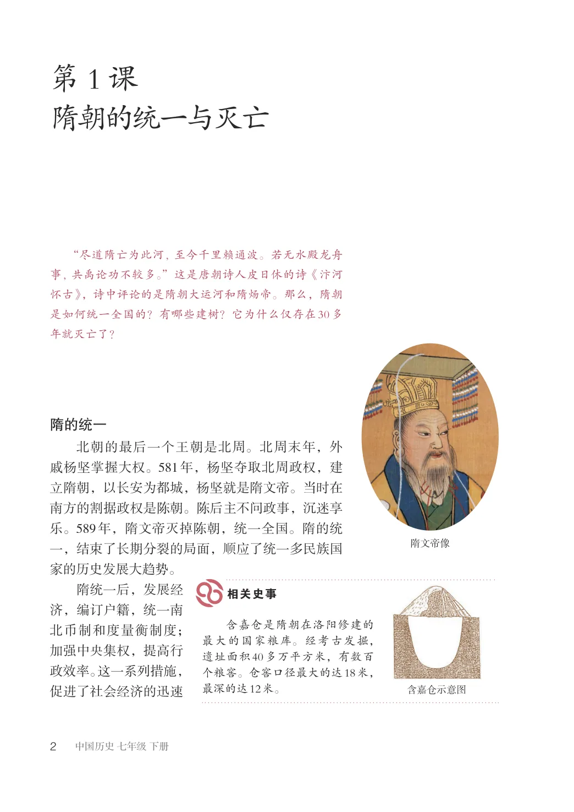
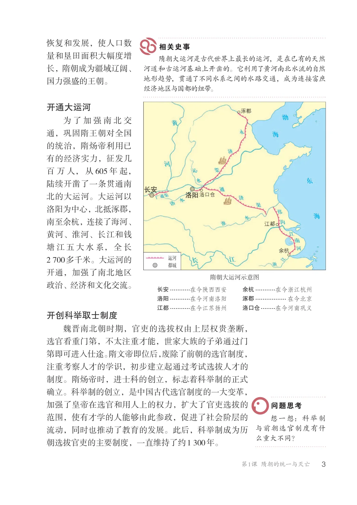
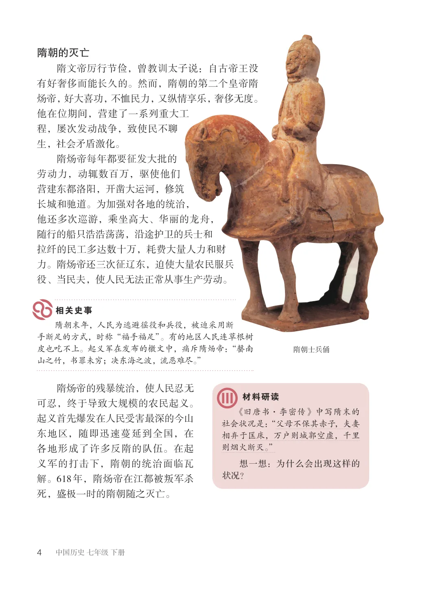
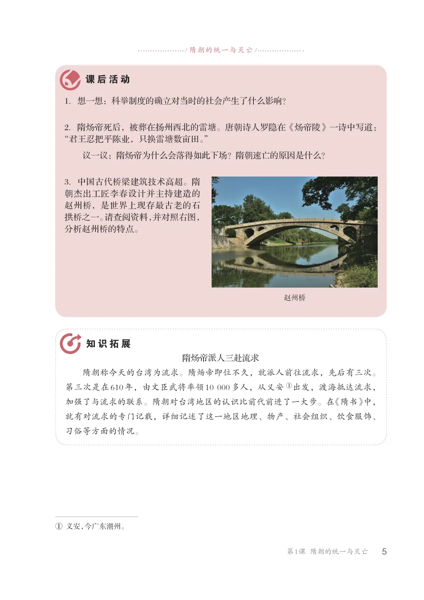

第1单元 · 教材第 2–5 页
第1课 隋朝的统一与灭亡
文字版依据教材 PDF 文本层整理；复杂地图、图表及版面关系请以右侧教材原页为准。
“尽道隋亡为此河, 至今千里赖通波。若无水殿龙舟事, 共禹论功不较多。”这是唐朝诗人皮日休的诗《汴河怀古》，诗中评论的是隋朝大运河和隋炀帝。那么，隋朝是如何统一全国的？有哪些建树？它为什么仅存在30多年就灭亡了？
隋的统一
北朝的最后一个王朝是北周。北周末年，外戚杨坚掌握大权。581年，杨坚夺取北周政权，建立隋朝，以长安为都城，杨坚就是隋文帝。当时在南方的割据政权是陈朝。陈后主不问政事，沉迷享乐。589年，隋文帝灭掉陈朝，统一全国。隋的统一，结束了长期分裂的局面，顺应了统一多民族国家的历史发展大趋势。隋统一后，发展经济，编订户籍，统一南含嘉仓是隋朝在洛阳修建的最大的国家粮库。经考古发掘，遗址面积40多万平方米，有数百个粮窖。仓窖口径最大的达18米，最深的达12米。
隋文帝像
北币制和度量衡制度；加强中央集权，提高行政效率。这一系列措施，促进了社会经济的迅速
含嘉仓示意图

恢复和发展，使人口数量和垦田面积大幅度增长，隋朝成为疆域辽阔、国力强盛的王朝。
隋朝大运河是古代世界上最长的运河，是在已有的天然河道和古运河基础上开凿的。它利用了黄河南北水流的自然地形趋势，贯通了不同水系之间的水路交通，成为连接富庶经济地区与国都的纽带。
开通大运河
为了加强南北交通，巩固隋王朝对全国的统治，隋炀帝利用已有的经济实力，征发几百万人，从605年起，陆续开凿了一条贯通南北的大运河。大运河以洛阳为中心，北抵涿郡，南至余杭，连接了海河、黄河、淮河、长江和钱塘江五大水系，全长2700多千米。大运河的开通，加强了南北地区政治、经济和文化交流。
隋朝大运河示意图
长安...........在今陕西西安
余杭...........在今浙江杭州
洛阳...........在今河南洛阳
涿郡................. 在今北京
江都...........在今江苏扬州
洛口仓........在今河南巩义
开创科举取士制度
魏晋南北朝时期，官吏的选拔权由上层权贵垄断，选官看重门第，不太注重才能，世家大族的子弟通过门第即可进入仕途。隋文帝即位后，废除了前朝的选官制度，注重考察人才的学识，初步建立起通过考试选拔人才的制度。隋炀帝时，进士科的创立，标志着科举制的正式确立。科举制的创立，是中国古代选官制度的一大变革，加强了皇帝在选官和用人上的权力，扩大了官吏选拔的范围，使有才学的人能够由此参政，促进了社会阶层的流动，同时也推动了教育的发展。此后，科举制成为历朝选拔官吏的主要制度，一直维持了约1300年。
想一想：科举制与前朝选官制度有什么重大不同？

隋朝的灭亡
隋文帝厉行节俭，曾教训太子说：自古帝王没有好奢侈而能长久的。然而，隋朝的第二个皇帝隋炀帝，好大喜功，不恤民力，又纵情享乐，奢侈无度。他在位期间，营建了一系列重大工程，屡次发动战争，致使民不聊生，社会矛盾激化。隋炀帝每年都要征发大批的劳动力，动辄数百万，驱使他们营建东都洛阳，开凿大运河，修筑长城和驰道。为加强对各地的统治，他还多次巡游，乘坐高大、华丽的龙舟，随行的船只浩浩荡荡，沿途护卫的兵士和拉纤的民工多达数十万，耗费大量人力和财力。隋炀帝还三次征辽东，迫使大量农民服兵役、当民夫，使人民无法正常从事生产劳动。
隋朝末年，人民为逃避徭役和兵役，被迫采用断手断足的方式，时称“福手福足”。有的地区人民连草根树皮也吃不上。起义军在发布的檄文中，痛斥隋炀帝：“罄南山之竹，书罪未穷；决东海之波，流恶难尽。”
隋朝士兵俑
隋炀帝的残暴统治，使人民忍无可忍，终于导致大规模的农民起义。起义首先爆发在人民受害最深的今山东地区，随即迅速蔓延到全国，在各地形成了许多反隋的队伍。在起义军的打击下，隋朝的统治面临瓦解。618年，隋炀帝在江都被叛军杀死，盛极一时的隋朝随之灭亡。
《旧唐书·李密传》中写隋末的社会状况是：“父母不保其赤子，夫妻相弃于匡床，万户则城郭空虚，千里则烟火断灭。”想一想：为什么会出现这样的状况？

/ 隋朝的统一与灭亡/
1．想一想：科举制度的确立对当时的社会产生了什么影响？
2．隋炀帝死后，被葬在扬州西北的雷塘。唐朝诗人罗隐在《炀帝陵》一诗中写道：“君王忍把平陈业，只换雷塘数亩田。”
议一议：隋炀帝为什么会落得如此下场？隋朝速亡的原因是什么？
3．中国古代桥梁建筑技术高超。隋朝杰出工匠李春设计并主持建造的赵州桥，是世界上现存最古老的石拱桥之一。请查阅资料，并对照右图，分析赵州桥的特点。
隋炀帝派人三赴流求隋朝称今天的台湾为流求。隋炀帝即位不久，就派人前往流求，先后有三次。第三次是在610年，由文臣武将率领10000多人，从义安①出发，渡海抵达流求，加强了与流求的联系。隋朝对台湾地区的认识比前代前进了一大步。在《隋书》中，就有对流求的专门记载，详细记述了这一地区地理、物产、社会组织、饮食服饰、习俗等方面的情况。
①义安，今广东潮州。
